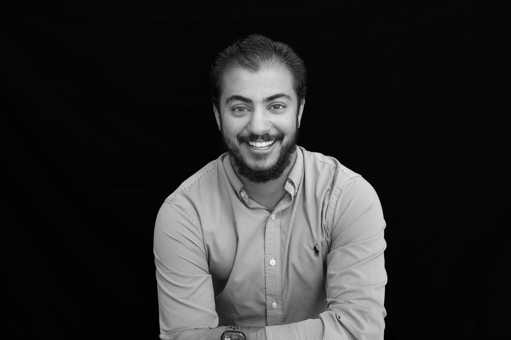

Hi, I'm Alex, I've spent 6+ years doing human factors research and UX design, with the privilege of working across spatial computing, conversational AI, aviation, and consumer audio. I've had a front-row seat to how Apple builds products used by millions — from the Vision Pro Dual Knit Band to core Siri features for Apple Intelligence.
I consider myself a human factors practitioner first — someone who moves fluidly between research, design, and product strategy rather than staying in one lane. I take pride in not falling into a box, and I'm a loud advocate for accessibility and universal design principles; I believe products aren't truly successful unless they work for the widest possible range of people, not just the average user.
In my spare time I'm a musician — piano, DJing electronic music, and guitar — and a private pilot with 80+ hours logged, always looking to add more. I'm also an avid outdoorsman and coffee enthusiast; you'll usually find me hiking, surfing, adventuring with my 10-pound rescue dog Remy, or at a local cafe learning about the latest brews.
Let's get connected — I'd love to hear what you're working on.